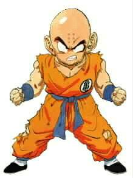

|
 Humans |
|
Description: Jack of all trades, master of none. Unlike other MUDs, humans here have the potential to possibly be as strong as the most powerful Saiya-Jin. Humans have the innate ability to improve themselves in a short period of time, resulting in a faster gain of power than any other race! As if this wasn't enough, if humans push themselves enough, they are able to achieve a state of being known only as "super human". In this stage, their power increases by a huge magnitude, making them a formidable opponent in battle. Energy Attacks: Energy Ball Energy Disk Dodompa Tribeam Kamehameha Renzoku Energy Dan Skills: Doublekick Doublepunch Energy Barrier Powerups: Turbo Superhuman |